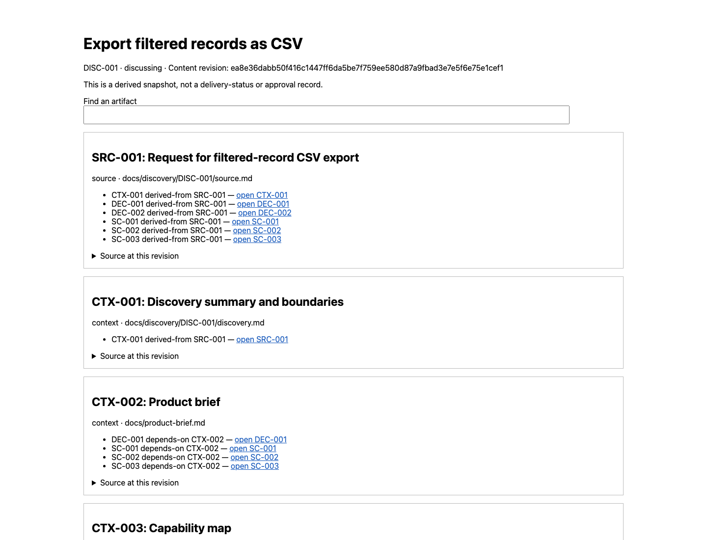

LIVE AGENT VALIDATION · 2026-09-17
AiCraft 0.9.0 (development)
Discovery → reviewed Spec
PARTIAL — Discovery accepted; Spec stopped for product decisions
Actual agents completed Discovery with independent Product Review and Trace, exact fixture acceptance and one local Spec triplet. Spec returned product_decision_required for two explicit choices; Spec Review did not run. This is not an end-to-end delivery pass.
12 live checks: 1 blocked, 7 pass, 1 pass_with_limitations, 3 recovered.
Actual Herdr Discovery-to-Spec exercise in an isolated fictional local repository; no application implementation or external tracker publication.
Initial source: 84fb88037632c29092e9c56dc92dda7b6e02e41b
Corrected source: df4dd471f1071be4e1e013d866f0f41088cad1bd
Observed behavior
| ID | Check | Result | Evidence |
|---|---|---|---|
| LIVE-T01 | Bind native worker identity before product assignment | recovered | Initial dispatch violated the contract. Fixed bootstrap exercised on subsequent fresh Codex workers. |
| LIVE-T02 | Persist questions and block review until answered | pass | Initial review gate rejected two unresolved choices; answers resumed DISC-001 and SC-001/002/003. |
| LIVE-T03 | Run independent reviews on one snapshot in isolated worktrees | pass | Both reviewers used snapshot 03d86ec6099e35abfb7c636cc2cb4fbade504be3 and distinct native sessions, with overlapping work. |
| LIVE-T04 | Reject semantically incomplete but structurally valid scenarios | pass | Round one returned three product findings and two trace findings despite structural review gate success. |
| LIVE-T05 | Validate actual reviewer artifacts across separate roots | recovered | Initial checker rejected transport paths; explicit coordination root fixed direct validation of both preserved worktrees. |
| LIVE-T06 | Preserve reports and reject stale review approvals | pass | Reports imported with output-only diffs; scenario edits changed revision and required new reviews. |
| LIVE-T07 | Detect invented attribution and escalate unresolved choices | pass | Round two independently rejected new producer assumptions represented as supervisor input. Two-round cap escalated; new explicit answers recorded. |
| LIVE-T08 | Use measured checkpoint timestamps | recovered | Initial estimated timestamps retained as invalid evidence; runtime helper now emits actual UTC observations. |
| LIVE-T09 | Require exact reviewed revision acceptance | pass | At CP-023 confirm passed while accepted failed. Foreman stopped without dispatch; supervisor separately accepted exact revision ea8e36dabb50f416c1447ff6da5be7f759ee580d87a9fbad3e7e5f6e75e1cef1 and selected local Spec. |
| LIVE-T10 | Create one Spec from accepted canonical scenarios | pass | Spec created exactly one FEAT-001 triplet at 0e549f858aaa6a02a45b7e07348fe30569538b28; frontmatter records DISC-001 accepted commit/revision, and scenario links target original SC-001/002/003 files. Two open product questions remain and prevent implementation readiness. |
| LIVE-T11 | Independently review Spec and stop before implementation | blocked | Spec returned question: product_decision_required for OQ-001 (failure/retry interaction) and OQ-002 (CSV serialization/order). Foreman entered AwaitOwner, started neither Spec Review nor Forge, and preserved the unmerged local Spec branch. |
| LIVE-T12 | Render the revision-bound HTML navigator in a browser | pass_with_limitations | Headless Chrome produced a screenshot; visual inspection confirmed title, exact revision, source nodes and reverse links. The browser command timed out after 35 seconds, and interactive search/navigation were not exercised. |
Defects and corrections
- LIVE-001 — fixed-live-verified
Codex has no agent_session before its first turn; Foreman dispatched product work despite the required non-null identity.
Introduce a bounded no-product bootstrap or fail closed; bind the real assignment only after native session identity is observed.
- LIVE-002 — fixed-live-verified
Controller checkpoint timestamps were estimated instead of sampled from the clock.
Use a deterministic clock helper for persisted checkpoints; distinguish measured elapsed time from narrative estimates.
- LIVE-003 — fixed-live-verified
return-check required transport report, trusted envelope and reviewer artifacts under one root despite separate worktrees.
Add explicit trusted --coordination-root for transport inputs, preserve --root for actual artifact worktree and containment in both; regression rejects changed bytes and traversal.
- LIVE-004 — resolved-by-explicit-input-and-independent-reviews
Discovery remediation presented producer-inferred failure and size boundaries as confirmed test-supervisor input.
Explicit new test-supervisor answers in answer-2.txt, independently re-review before any acceptance; historical false attribution retained in superseded evidence.
- LIVE-005 — fixed-and-rechecked
Successful handoff validates the accepted gate but prints gate=draft from the unused default CLI option.
Report the effective accepted gate for handoff and spec-adoption, with a regression assertion; validation behavior remains unchanged.
Runtime corrections: 049f169; final handoff label: df4dd47. No bug issues were created by the fictional local-tracker fixture.
Measured intervals
Measured window: 3273.3 seconds. Excludes initial setup and first unmeasured Discovery. Includes supervisor input, debugging and coordination; not an AI-only execution benchmark.
UTC dispatch-to-observed-return intervals include coordination and observation latency. They are not model execution benchmarks. Earlier estimated timestamps are excluded.
| Stage | Seconds | Dispatch (UTC) | Observed return (UTC) |
|---|---|---|---|
| Answer integration | 241.2 | 2026-09-17T12:58:01.957354+00:00 | 2026-09-17T13:02:03.135728+00:00 |
| Review round 1 | 185.5 | 2026-09-17T13:03:57.863633+00:00 | 2026-09-17T13:07:03.400872+00:00 |
| Remediation round 1 | 262.2 | 2026-09-17T13:08:28.756097+00:00 | 2026-09-17T13:12:50.918711+00:00 |
| Review round 2 | 179.6 | 2026-09-17T13:15:02.818456+00:00 | 2026-09-17T13:18:02.446233+00:00 |
| Explicit decision integration | 416.2 | 2026-09-17T13:20:02.424581+00:00 | 2026-09-17T13:26:58.585899+00:00 |
| Review round 3 | 217.5 | 2026-09-17T13:28:33.932399+00:00 | 2026-09-17T13:32:11.432217+00:00 |
| Review report integration | 265.9 | 2026-09-17T13:33:11.144275+00:00 | 2026-09-17T13:37:37.039785+00:00 |
| Local Spec (staged, not reviewed) | 427.1 | 2026-09-17T13:43:20.774393+00:00 | 2026-09-17T13:50:27.831026+00:00 |
Rendered trace artifact

Screenshot of the historical review snapshot. Its discussing label is expected: the navigator is not an approval or delivery-status record.
Verification limits
- This is a recovery run with source fixes, not a clean full rerun of one immutable plugin build.
- Fictional supervisor answers do not constitute acceptance of a real product.
- GitHub mutation, issue adoption in a live repository, PR merging and application acceptance are outside this run.
- Cursor runtime and native skill namespace invocation are not exercised by this Herdr run.
- Navigator screenshot proves rendering only. Browser process timed out after creating it; search and link interaction tests were not run.
87 deterministic regression tests passed on runtime corrections (25 artifact, 7 runtime, 50 coordination, 5 Cursor catalog); all 25 artifact tests passed again after the final handoff-label correction. GitHub lint passed on 049f169; final publication checks are recorded separately.
The run exposes substantial coordination overhead: repeated fresh-worker startup, duplicated context reading, and separate bookkeeping assignments. This delivery validates gates; it does not yet establish a fast path for small work.